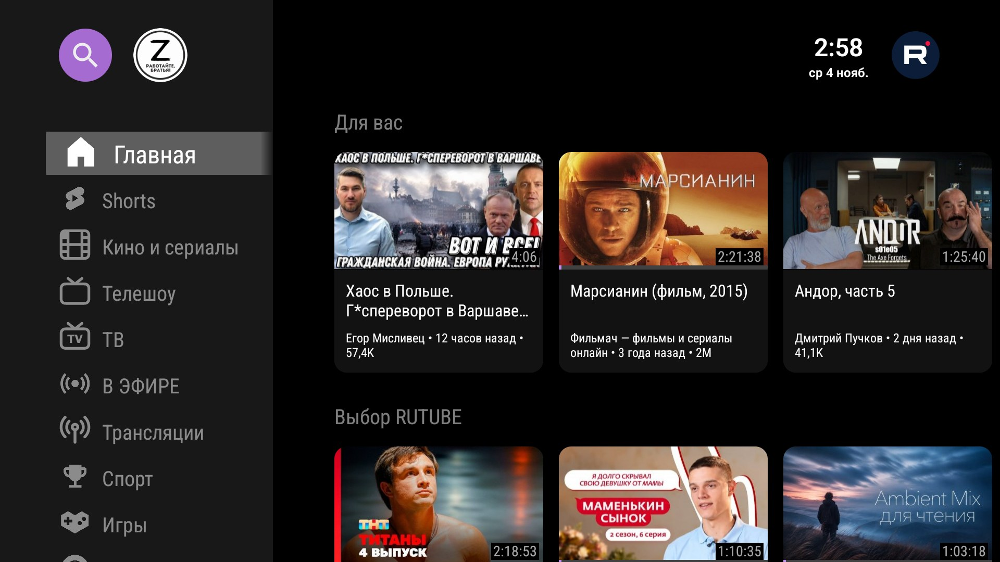
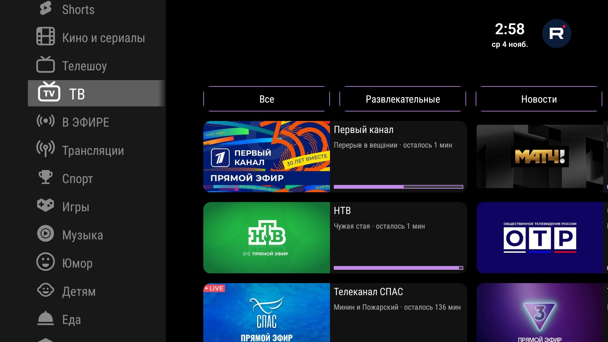
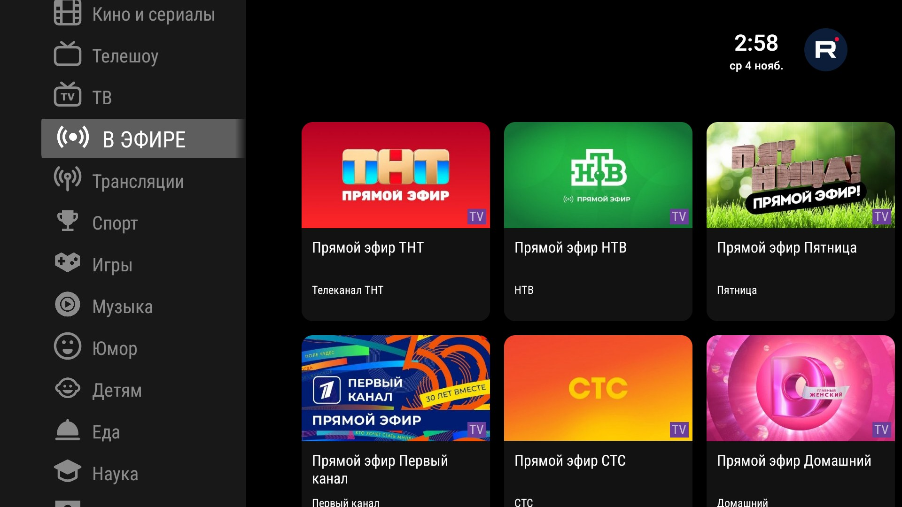
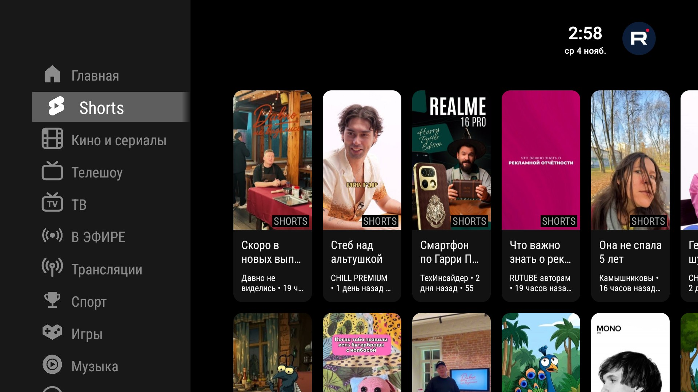
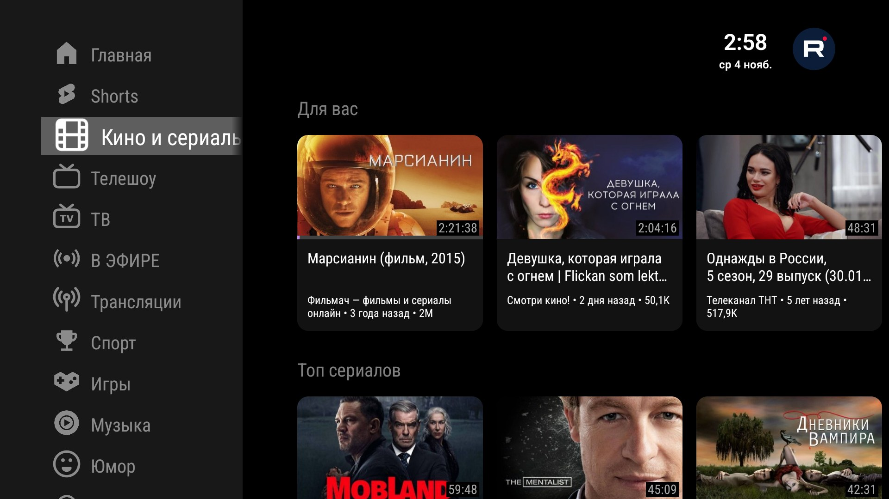
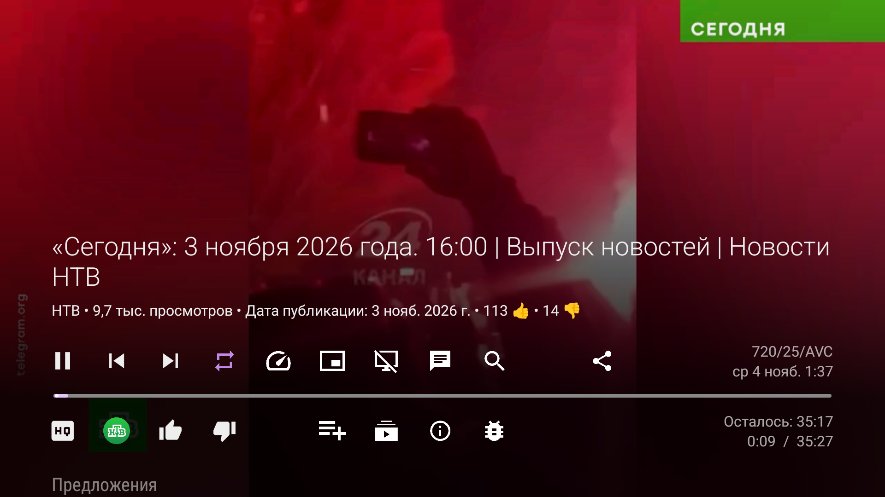

Неофициальный клиент RuTube для Android TV и ТВ-приставок. Без рекламы, без трекинга, без Google Services. Управление — только пультом.
Скачать APKSmartRuTube — форк SmartTube: проверенный TV-интерфейс (leanback, фокус-навигация, карточки, плеер) подключён к API RuTube вместо YouTube. Поддержка YouTube из приложения полностью удалена — ни YouTube-кода, ни YouTube-сервисов.
Проект в активной разработке. Публичный контент RuTube работает без входа в аккаунт.






1. Скачайте APK на приставку или телефон-флешку.
2. Установите файловым менеджером либо командой:
adb install SmartRuTube_beta_1.0.619_universal.apk
Рекомендуется Android 9 и новее. Автор тестировал приложение только на Android 9 — на других версиях работа не проверялась. Приложение не конфликтует с SmartTube: другой пакет и свои каталоги данных.
Тема на 4PDA: SmartRuTube
SmartRuTube — неофициальный клиент. Не связан с ООО «Рутьюб» и правообладателями. База кода — SmartTube (MIT).